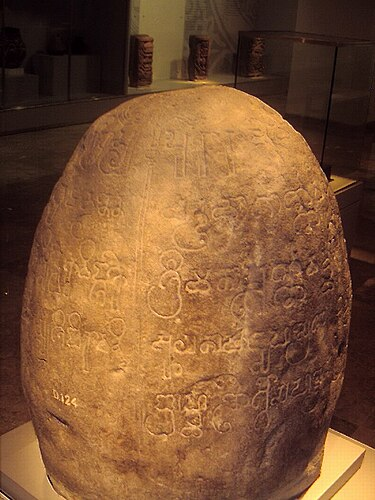
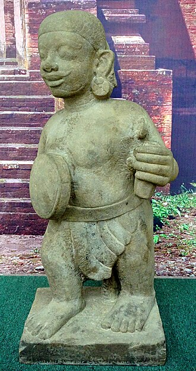
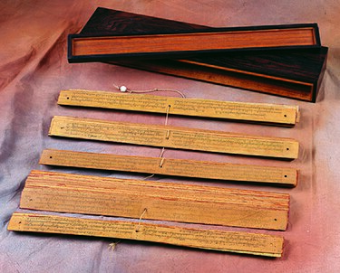
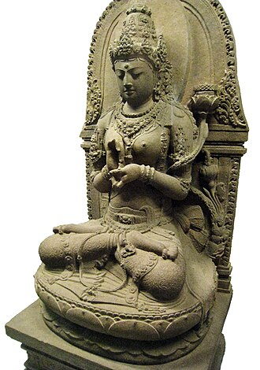
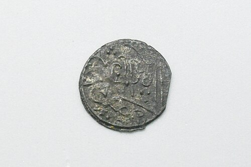

Kerajaan Nusantara
Kunjungan:
0/6
Pengetahuan Meningkat!
Baca juga artikel Masa Penjajahan





Kerajaan
Baca artikel lebih lanjut
Tutup
Quiz Kerajaan Nusantara
Memuat pertanyaan...
Pertanyaan Berikutnya
Selesaikan Quiz
Kembali ke Gerbang Silam